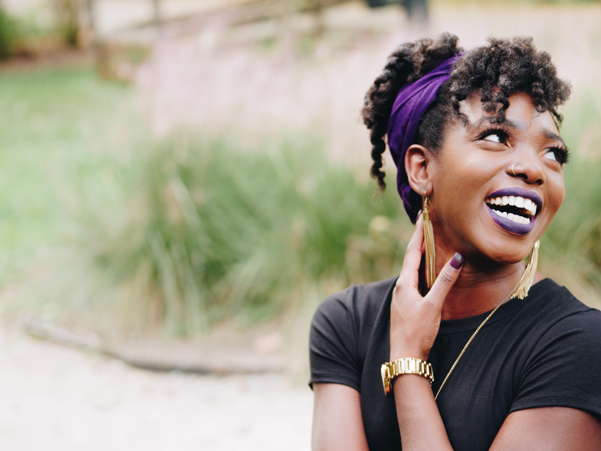
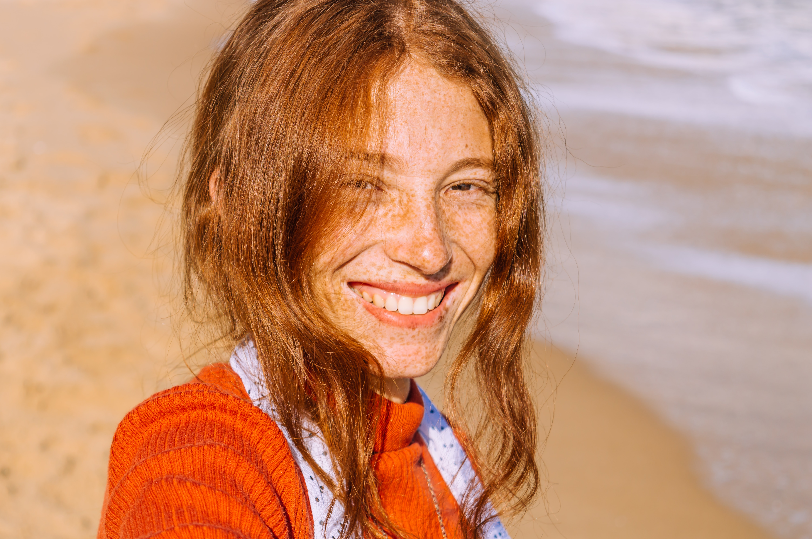

JUNIPER BARDOT
I'm a type 2w3 on the enneagram, I adore the color yellow, and I come most alive when I am watching the sun rise. Hi, it's nice to meet you! My name is Juniper Bardot and I LOVE coffee. I graduated with a degree in Communication and decided to use my skills in an unorthodox way, through connecting with local suppliers and vendors to create this thriving business I get to share with my bestest friend Winnie. When I'm not sipping coffee, you can find me thrifting or catching up on New Yorker articles.

WINNIE ELLIS
Tough act to follow (she was always the wordsy one!). My name is Winnie and as fate would have it, I met Juniper in college. I majored in entrepreneurship and was eager to build something I could look at and smile from. I love skiing, windsurfing, and kayaking. I couldn't imagine life without my rescue dog Arlo, and I have been to 39/50 states so far! It's so nice to meet you and I am SO glad you're here!
